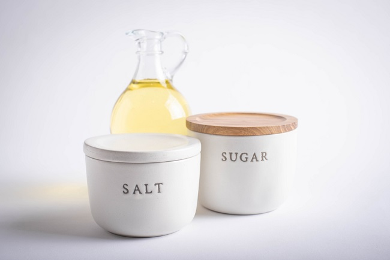

Pembahasan Terkait
Bahaya Merokok
Merokok merupakan kebiasaan yang dapat membahayakan kesehatan, baik bagi perokok aktif maupun pasif. Zat-zat berbahaya dalam rokok, seperti nikotin, tar, dan karbon monoksida, dapat meningkatkan risiko penyakit serius seperti kanker paru-paru, penyakit jantung, dan gangguan pernapasan...

Bahaya Sering Mengonsumsi Makanan Pedas
Makanan pedas dapat memberikan sensasi yang menyenangkan, tetapi jika dikonsumsi secara berlebihan, dapat menimbulkan dampak negatif bagi kesehatan...
Batasan Konsumsi Gula Garam Lemak
Konsumsi gula, garam, dan lemak berlebihan dapat meningkatkan risiko penyakit, seperti diabetes, hipertensi, dan penyakit jantung...